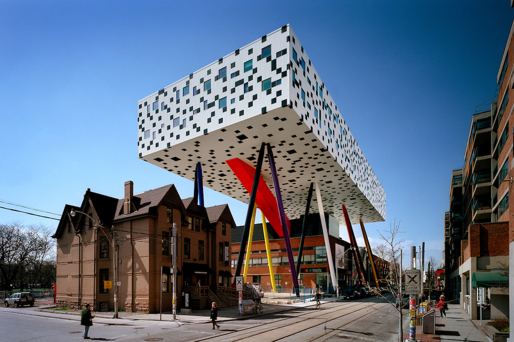

Construction Projects In Progress
High Park Picnic/Nuclear Sites
Covertly convert each High Park picnic site to a nuclear disposal site.
CN Tower Base Repair

CN Tower's base foundation needs repair after the negligent damage done by Bob the Builder and his crew, Scoop, Muck, Dizzy, Rolly, Lofty, and Wendy.
Toronto’s Downtown Pedestrian Walkway (PATH) Open Ceiling
Mayor requested an open ceiling design for the PATH. Unsure of approach considering the PATH is underneath the heart of downtown Toronto.
OCAD Library Multiverse Portal
Build a portal to the multiverse in the third stall of the washroom located in the library's basement. Client wants to make sure any student that enters the stall dissapears into another universe.
Dundas Square Eternal Night
Build stacking add billboards large enough to blot out the sun.
Ontario Science Centre Major Relocation
OSC will be relocated 43 centimetres east.
Mount Sinai Sister Hospital
A 100% replica of the hospital needs to be constructed on the other side of the street.
2 Armel Court Building Shortening
The 4th and 12th floors need to be removed entirely. Approach will require demolition and a new insurance provider.